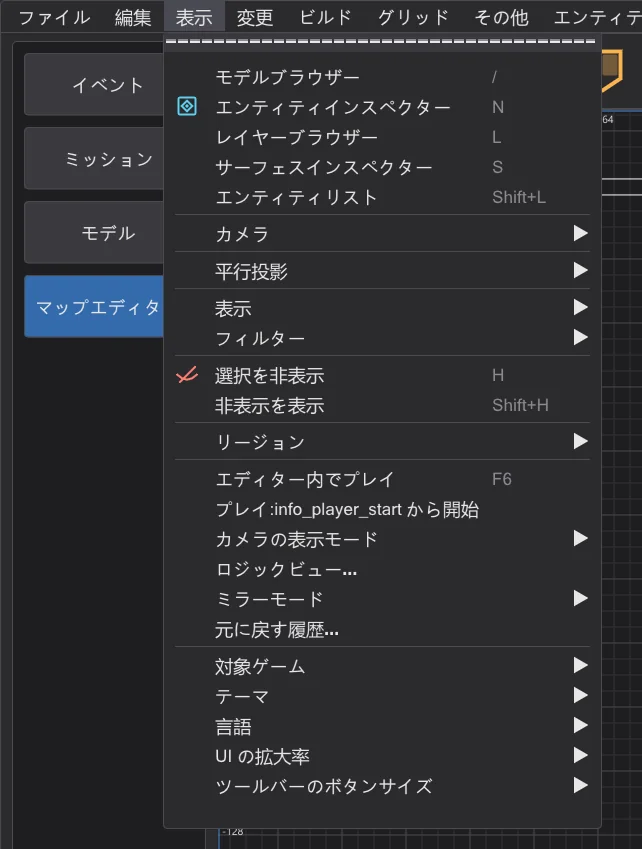
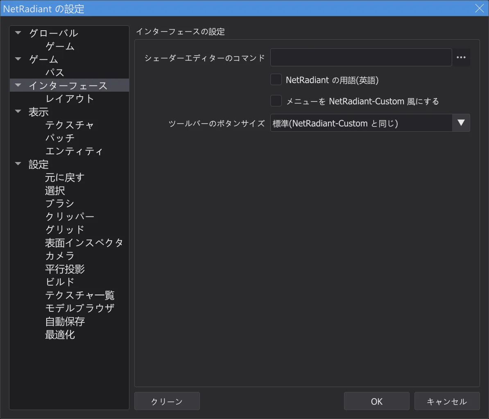
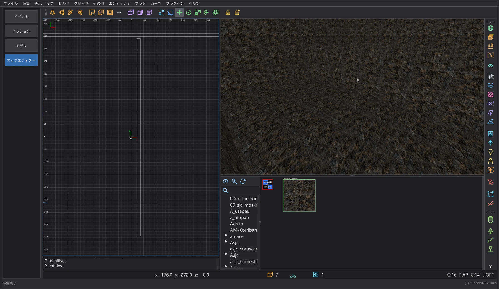

マップとシーン
マップエディター:NetRadiant-Custom との違い
マップエディターは外観と操作で NetRadiant-Custom 20260114 に従っています。NetRadiant-Custom、Xonotic NetRadiant、GtkRadiant、q3map2 の既知の不具合を一つずつ確認しました。JK Studio が異なる点と、意図的に NetRadiant-Custom と同じにしている点をまとめます。
独自の操作(NetRadiant-Custom にはありません)#
- JK Studio 風のメニュー。マップエディターのメニューバーとすべてのメニューは、プログラムのほかの部分のメニューと同じ見た目です。項目、順序、サブメニュー、チェック、ショートカット、ニーモニックキー、各項目の動作は NetRadiant-Custom と同じです。Preferences > Interface > メニューを NetRadiant-Custom 風にする で NetRadiant-Custom の見た目に戻せます。
- View のプログラム設定。表示 の最後に 対象ゲーム、テーマ、言語、UI の拡大率、ツールバーのボタンサイズ があり、プログラムの View メニューと同じ働きをします。言語・配色・拡大縮小は その他 の最後にも残っています。
- ツールバーのボタンサイズ。メイン・フィルター・プラグインの各ツールバーで 小・標準(NetRadiant-Custom と同じ)・大 を選べます。Preferences > Interface と 表示 > ツールバーのボタンサイズ にあり、すぐに反映されて保存されます。ビューもツールバーに合わせて移動します。
- マップエディターでは Ctrl + マウスホイール でプログラムは拡大縮小されません。NetRadiant-Custom と同じく、ホイールは Ctrl を押していてもビューのもの(2D のズーム、カメラの移動、テクスチャブラウザーのスクロール)です。拡大縮小は 表示 > UI の拡大率 にあります。
- ウィンドウタイトル。マップエディターではタイトルにマップ名と、未保存の変更があるときは
*が表示されます(NetRadiant-Custom と同じ)。 - 独自のビルド機能。残り時間つきの ビルドの進行状況 ウィンドウ、部分コンパイル:VIS を再利用 と 部分コンパイル:ライトを再利用、コンパイル済みマップに追加(マップエディター:ビルドの進行状況と部分コンパイル)、エディターデータを保持、ジオメトリから misc_model を復元、ライトを推定(実験的)(エディターデータを残す)。どれも専用のメニュー項目かオプションがあり、「NetRadiant-Custom にはありません」と表示されます。bhed_q3map2 にはそのためのスイッチ
-bhedvisreuse、-bhedlightcache、-bhedmodelsがあり、使わなければ以前と同じようにビルドします。 - 独自のエディターツール(ステージ 8b)。Split レイアウト用の 分割ウィンドウを自由に割り当てる、エディター内でプレイ(F6)、ロジックビュー、カメラの表示モード、ミラーモード、元に戻す履歴(マップエディター:地形・プレイ・ロジック・ミラーなど)。どれも専用のメニュー項目かオプションがあり、「NetRadiant-Custom にはありません」と表示され、既定ではすべてオフです。Terrain Generator は NetRadiant-Custom のリリース 20260114 より後のソースから来ており、固定シードは独自の追加です。ジオメトリから misc_model を復元 はキャッシュしたモデルインデックスですべてのモデルフォルダーを探します。bhed_q3map2
-light -bhedgpuは影のテストをグラフィックカードで行い結果はバイト単位で同じですが、オフのままです(測定したコンピューターでは速くならなかったため)。






エディター:修正した不具合#
| 報告 | NetRadiant-Custom | JK Studio |
|---|---|---|
| NRC#65 | 頂点・エッジモードを抜けても要素が選択されたままで、次のドラッグでブラシが変形します。 | 頂点・エッジモードを抜けるとその要素の選択が解除されます。 |
| NRC#302, GL#206 | パッチの向きによっては、ベベルと反転ベベルのキャップで縮退したパッチが 2 つできます。 | キャップの向きをサイズと形で選ぶので、どのキャップにも面があります。 |
| NRC#130 | ウムラウトなど非 ASCII 文字を含むパスではマップが開けず、設定が壊れます。 | エディターと bhed_q3map2 はどんなパスでも扱えます(例:C:\Users\Jörg\...)。 |
| NRC#164 | 相対エンジンパス(../../Academy/)で保存するとアサーションが発生します。 | パスは設定時に絶対パスに変換されます。 |
| NRC#213 | AutoCaulk が理由を示さず "reading ..._ac.caulk failure" で失敗します。 | コンソールに q3map2 の出力と理由が表示されます。 |
| NRC#145 | Jedi Academy のシェーダーでは、AutoCaulk がソリッドなブラシに非ソリッドの system/nodraw を付け、存在しない watercaulk を使います。 | Jedi Academy と Jedi Outcast の system.shader の名前(nodraw_solid、caulk_water、caulk_lava、caulk_acid)を使い、ゲームにないシェーダーは使いません。AutoCaulk はエディターのゲーム(-game ja/jk2)で q3map2 を呼び出します。 |
| NRC#261 | サーフェスインスペクターは、他のエディターが書いた正規化されていないブラシプリミティブのシフトをスピナーの上限(8192)として表示し、矢印や Enter でテクスチャがずれます。 | スピナーの範囲外の値はタイル単位で縮めて表示します(配置は同じ)。値を設定するまで .map は変わりません。 |
| NRC#279 | キャップは特定のサイズのパッチでしか作れず、コンソールは英語でしか説明しません。 | 制限は同じ(意図的)ですが、英語の行の下にプログラムの言語で各キャップに必要なサイズを表示します。 |
| NRC master | タグ 20260114 以降に修正された表記の誤り(bobToolz Door Builder の "East - West"、"Distance Multiplier")。 | 取り込み済み。 |
確認中に見つかった問題
- テクスチャブラウザーで選んだテクスチャが、新しいブラシのシェーダーとして実際に設定されるようになりました(以前は保存されていませんでした)。
- タグウィンドウの状態が二重に保存されて失われていました。設定の クリーン ボタンは機能していませんでした。
- すべてのメニュー項目、ボタン、キー、フィールドの効果を確認し、マップを変更するコマンドはすべてバイト単位で元に戻す・やり直しができます。
bhed_q3map2:修正した不具合と意図的な出力の違い#
| 報告 | NetRadiant-Custom | JK Studio |
|---|---|---|
| Tester (Stage 7) | -convert(File > Open .bsp)は Jedi Academy・Jedi Outcast・SoF2 のマップの hint・areaportal・skip ブラシを detail として書き出します。これらのゲームでは "structural" に内容フラグがないため、透明な structural ブラシの判定が働きません。 | ビルド時と同じくシェーダーのコンパイルフラグ(q3map_structural / surfaceparm structural)で判定します。これらのブラシは元のマップと同じく structural として戻ります。 |
| GL#173 | 非決定的です。ビルドごとに異なる .bsp が書かれます(シェーダーのポインターでのソート、未初期化のライトマップ座標、-vis と -light のスレッド競合)。生成されるスタイルシェーダーの名前もビルドごとに変わります。 | BSP 段階とライト段階は、同じマップに対して毎回同じ結果になり、スレッド数にかかわらず 1 スレッドのビルドと同一です。1 スレッドでは -light は NRC とバイト単位で一致します。VIS 段階は NRC と同じで、1 スレッドでは常に同じですが、複数スレッドではビルドごとに結果がわずかに異なることがあります。 |
| NRC#101 | ダートマッピング(-dirty)が、空をまるで壁のように扱い、空に接する面を暗くします。 | 空を通ってマップの外に出るダートの光線は暗くしません。 |
| NRC#102, GL#154 | ドットを含むマップ名(test.q3、foo_0.1)を .map なしで渡すと、ドット以降が失われます。 | 置き換えるのは q3map2 自身の拡張子だけです(エディターは常に完全なパスを渡します)。 |
| PR #316 | メモリエラー:平面のないブラシ面が mapplanes[-1] を読み、deluxemap がないのに deluxel を参照します。 | 修正済み(AddressSanitizer と UBSan で回帰テスト用マップと 3 つのゲームのすべての逆コンパイルマップを確認)。出力は変わりません。 |
| PR #316 | 1 立方ユニット未満の薄いブラシ部分が捨てられ、0.2 ユニットより狭い交差面が消え、別の面の平面にほぼ重なる面が描画されず、断面の小さいブラシが分割されないため一部に衝突判定がなくなります。 | このプルリクエストの 5 つの修正を取り込みました。いずれも Jedi Academy と Jedi Outcast のオリジナルマップで個別に確認し、悪化したマップはありません。取り込まなかったもの:縮退したポータルだけを捨てる変更。これを入れると 106 枚中 42 枚のオリジナルマップがリークします(NetRadiant-Custom が閉じる細い隙間)。 |
| ASan, UBSan | 壊れたマップファイル(エンティティがまったくない、最後の文字が引用符、巨大な数値)や、ライトマップ用にパッチを分割するときに、クラッシュや未定義動作が起きます。 | AddressSanitizer と UBSan のもとで、わざと壊した 300 枚のマップとオリジナルマップに bhed_q3map2 を実行して見つけ、修正しました。エンティティのないマップには明確なエラーが表示されます。正しいマップの出力はバイト単位で変わりません。 |
| Decimal | (エディター)保存時に約 1e10 以上の数値が切り詰められ、1e20 が 1 になります。 | 値が保たれます(壊れたマップファイル用の新しいファザーで発見)。通常の座標は以前とまったく同じに書き出されます。 |
そのため bhed_q3map2 でビルドした .bsp は、NetRadiant-Custom の q3map2 でビルドしたものと面の順序やライトマップの配置が異なりますが、ジオメトリは同じです。NetRadiant-Custom の q3map2 自体も、同じファイルを二度書くことはありません。
ゲームと同じプレビュー#
| 報告 | NetRadiant-Custom | JK Studio |
|---|---|---|
| OpenJK#1358 | (エンジン)カリング点 origin + (0 0 zoffset+1) が固体内部にある misc_model_static は描画されません。 | 「ゲームと同じ」プレビューでも表示されず、最適化ツールが表示を戻す zoffset を提案します(マップエディター:最適化ツールと上限)。 |
| JKHub | (ゲーム)ライトスタイル:エンティティを変更した後、切り替え可能なライト(targetname 付き)が別のライトを点滅させます。-onlyents はスタイルを付け直しますが、ライトマップは古い番号のままです。 | 切り替え可能なライトが元の .bsp と異なる場合、エンティティのみ更新 は実行せず、完全なビルドを求めます(マップエディター:完成したマップを開いて変更する)。 |
NetRadiant-Custom と同じにしている点#
- ブラシの中のカメラ(ステージ 7):裏面は描画されないので、中に立っているブラシは消えます。ただしシェーダーに
cull none・cull twosided・cull disableがある場合(フォグボリューム、ガラス、水)は、NetRadiant-Custom と同じく内側から壁が見えます(renderstate.cpp OpenGLShader::construct、shaders.cppcull)。 - NRC#281:複数の対象に Ctrl+K を使うと同じ targetname になります(NRC と同じ)。
- NRC#132:リージョンにエンティティがなく、カメラがブラシ内にあるとリージョンビルドはリークします(NRC と同じ)。JK Studio はこの場合ビルド前に警告します。
- NRC#48:RBSP(Jedi Academy、Jedi Outcast)では外部ライトマップとライトスタイルを併用できません(形式の制限)。ビルドメニューと最適化ツールはこの組み合わせを拒否し、回避方法を説明します。
- GL#189、NRC#144:床下の面光源は backsplash により床を透過して照らします(NRC と同じ)。最適化ツールがこうした光源を見つけます(マップエディター:最適化ツールと上限)。